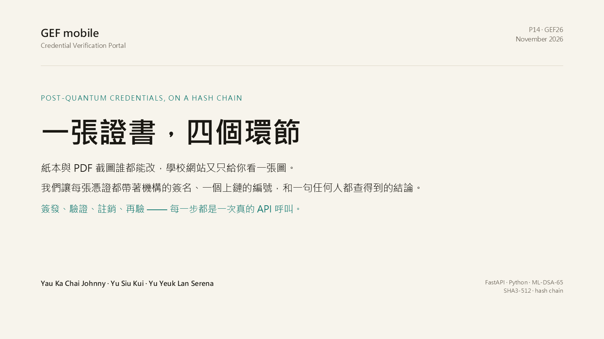
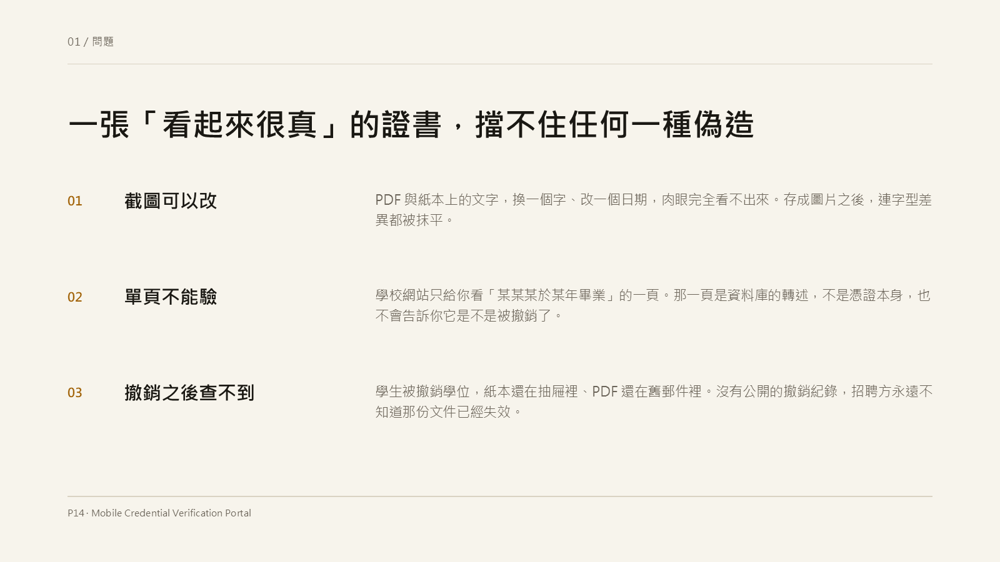
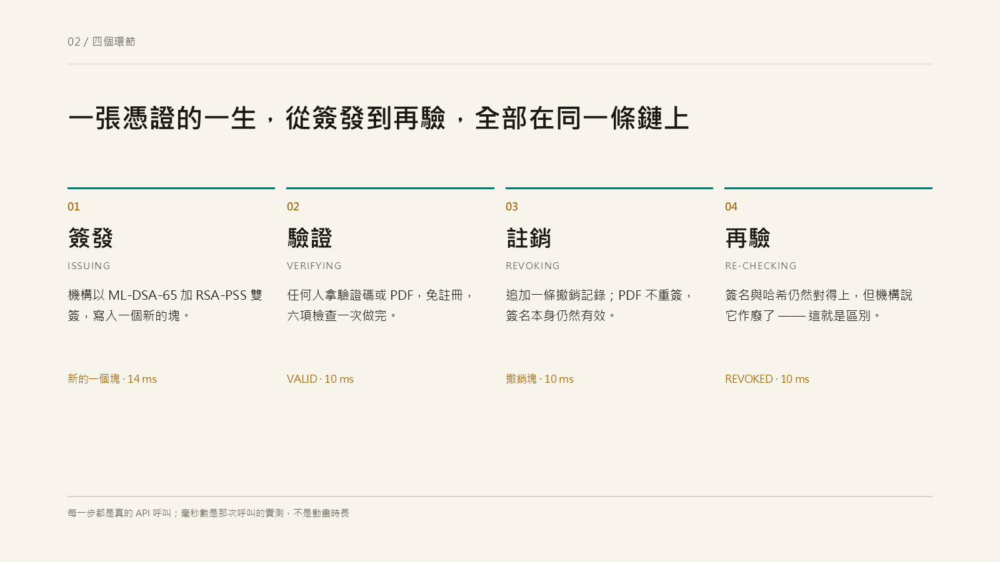
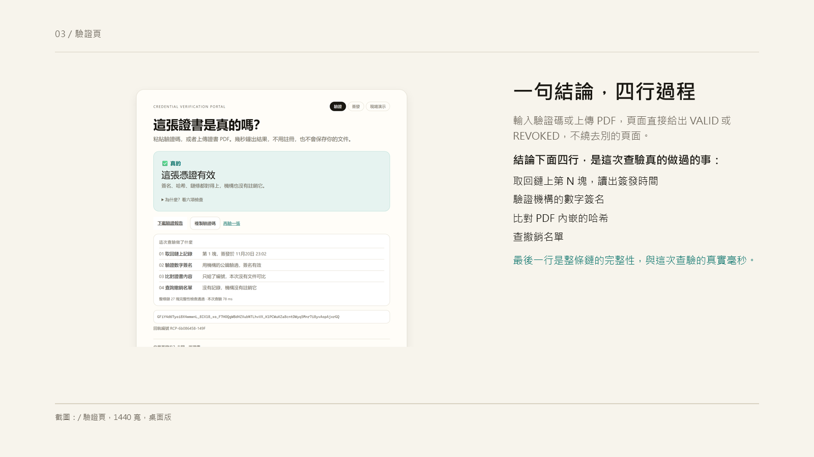
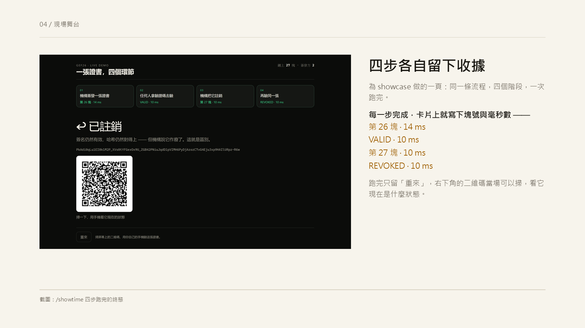
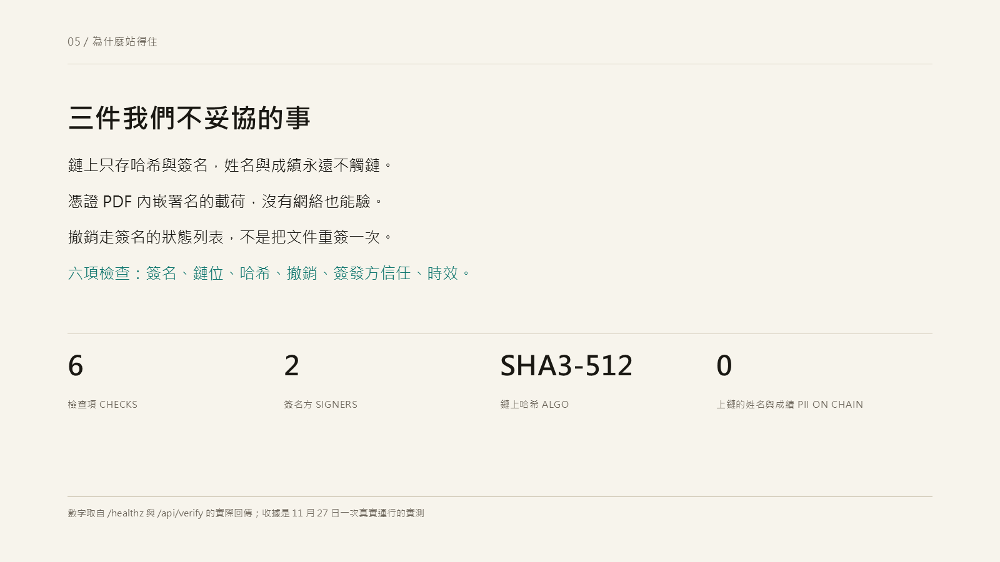
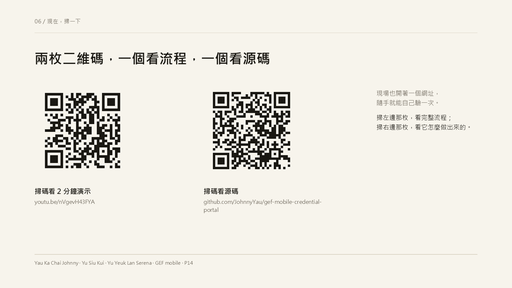

開場就講一句：紙本和 PDF 截圖誰都能改，學校網站又只給你看一張圖。
所以我們做的不是另一個文憑驗證網站，而是把「這一刻，這張憑證有沒有被動過」變成一個任何人按一次就有的答案。
若被問技術棧：FastAPI；簽名用 ML-DSA-65（後量子）與 RSA-PSS 並存；鏈用 SHA3-512。

三件事，每件都指一下對應那一格。
第三點最少人講：一張 2019 年發的文憑，2023 年被撤銷了，你手上那份 PDF 完全看不出來——因為「撤銷」這件事沒有寫在任何你看得到的地方。

簽發、驗證、註銷、再驗。指每張卡右下那行小字：那是真的 API 呼叫量到的毫秒，不是動畫。
第 1 塊簽發、第 3 塊撤銷：同一個人在同一條鏈上留下兩筆，第二筆說第一筆不算了。

這是一個真的僱主會看到的畫面。上面一句結論，下面四行說明它憑什麼這樣說：取回鏈上第 N 塊、用機構公鑰驗簽、比對內容雜湊、查撤銷名單。
四行裡任何一行不通過，上面就不會是綠色——這是我們刻意不讓它「只給一句話」。

這是我們在台上用的同一頁。四步跑完，四張收據都寫著塊號與毫秒。
為什麼要在台上跑真的？因為假的一被問「第幾塊」就露了；而我們每一格都答得出來。

三條原則：只用後量子簽名（ML-DSA-65 與 RSA-PSS 並存、簽名方可輪替）；鏈上只有雜湊與簽名；結論只說「這一刻、這六項檢查通過」。
右上那個 0 是我們最在意的數字：鏈上沒有一筆姓名或成績。
若被問法律效力：我們不宣稱它是學歷認證，只宣稱這一刻的密碼學結論——這句話就印在每張收據上。
若被問攻擊面（這一屆最常問）：拿著改過的 PDF——簽名改不了、雜湊對不上；拿著簽發方公鑰——只能驗不能簽；拿到整條鏈——上面只有雜湊與簽名，抄走也換不了錢。
我們不保證的兩件，要主動說：簽發那一刻校方有沒有說謊；簽發方自己把私鑰洩漏出去。所以我們保的是「這份文件確由那個簽名方簽發、內容未被更動、此刻未被撤銷」，不是「簽發方當時說的話是真的」。

兩枚碼：左邊是完整的四步錄屏，右邊是原始碼。
網址是臨時的，碼不是——所以我們印的是碼，不是那一串 trycloudflare。
收尾一句：你現在可以掃，也可以回去自己起一份。